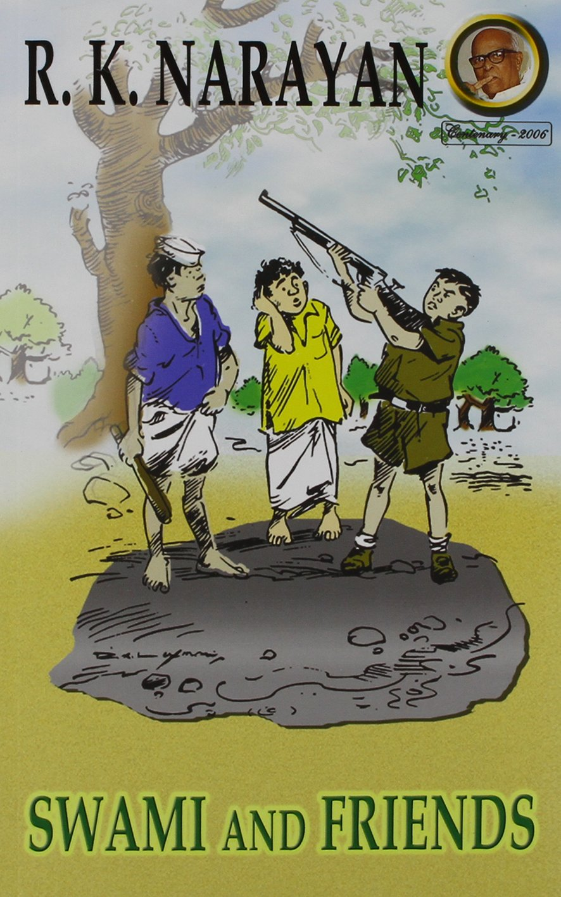

Thank you for visiting our webpage! Please visit again!

Swami and Friends is the story of the tumultuous friendship of Swaminathan, his four childhood friends, and a new boy named Rajam. It takes place in British-colonial India in the year 1930. The story begins by introducing Swaminathan and his friends Somu, Sankar, Mani, and Pea. Swami talks about how different all of his friends are from one another and how their differences actually make their friendships stronger. Soon, however, a new boy arrives, named Rajam who Swami and Mani absolutely hate. It isn’t until the three boys confront each other that they realize they have a lot in common, and become fast friends. After a lot of convincing, the other three boys accept Rajam too and the six boys are temporarily at peace.
Later, a prominent Indian politician is arrested and Swami joins a mob of protesters. He gets swept up in the fervor of the crowd and uses a rock to destroy school property. When the crowd is broken apart, Swami is left to face the consequences of his actions. Not only is Swami forced to switch to a more strict and rigorous school, but Rajam is hurt by the actions of his friend, making their friendship unstable.
In order to fix his friendship with Rajam, Swami must atone for his actions; he decides to partner with Rajam to create their very own cricket team called the M.C.C. The two boys are intensely passionate about the team, but tensions rise as Swami’s strict school and intense workload get in the way of his commitment. Rajam threatens to never speak to Swami again if he misses the match of the year.
Despite his best efforts, Swami is forbidden by his strict headmaster from leaving early to go to his daily practices. In a rage, Swami throws his headmaster’s cane out of the window. Then, terrified of the repercussions, Swami decides to run away from Malgudi for good and never return. While fleeing, he becomes lost and wanders aimlessly until he is rescued. He has missed the M.C.C. match he swore to go to. Already knowing his best friend may never speak to him again, Swami finds out from his friend Mani that Rajam is leaving the next morning to move to a new city with his family.
In a desperate attempt to make amends, Swami rushes to the train station the next morning with a book he intends to give to Rajam as a way to make peace. He nearly misses the train’s departure and looks at his best friend through the window, who still refuses to speak to him. Mani must hand him the book, as he would not take it from Swami. The story ends as the train pulls away and Swami is left wondering if his friend will write and if he is forgiven.
This book is a thought-provoking read, perfect for a child between the ages of 7 and 12. The conflict that arises throughout the book between Swaminathan and his friends are problems that many children face today. For example, towards the beginning of the book, Swami and his four original friends do a great job of seeing the positives of their differences, but struggle to see the good in Rajam. It is important to show young readers the importance of making new friends and adjusting to changes that may occur among the friends you already have. Another lesson that is present in the book is the importance of using your words to express how you feel, rather than your actions. When Swami is upset about the politician who was arrested, he chooses to go out and join a mob rather than talk to his parents or a teacher to express his feelings. Even if he didn’t start with the intention to damage school property, the power of the mob mentality and peer pressure are evident in Swami’s actions and he is adequately punished for what he chose to do. Similarly, at Swami’s new school, he gets very angry at his headmaster and expresses this by throwing his cane out the window instead of using his words to explain his frustration. The consequence of this was the guilty feeling he got from his actions that caused him to run away and miss the cricket game. In both cases, children can see that Swami could have avoided a lot of trouble if he had taken a deep breath and used his words to explain how he felt, instead of only using actions. Finally, the ending of this book is not what you would consider your classic happy ending. In fact, the reader is left wondering if Rajam ever forgave Swami for the way he treated him. While this ending may seem unsatisfying to some, I believe that is the point and that children who read this story will have a more accurate depiction of the world they live in after they read it. I think it is important to show them that not every story has a happy ending and this is one of those stories.

Malgudi Days has a very special place among both cinema and book lovers. Thanks are due to author RK Narayan and Shankar Nag (director of the entertaining TV series), who not only made our childhood dreamy but also gave us a reason to get all nostalgic as soon as we hear the title song.
Swami and Friends is just about the ideal book for beginners. The author’s use of humor and wit make this a fairly interesting read.

Even though the book is set in the pre-Independence era, the author’s clarity makes the story really relatable even in this age.

While reading through the chapters, you can actually relate to each and every character. Adult readers will do well not to catch themselves recollecting their school days with a grin. All in all, this timeless piece is a perfect read for children and grown-ups alike.
I am still dipping my toes into the literally fiction pool, finding what works for me and what doesn’t. Books like Swami and his friends are definitely my cup of tea.